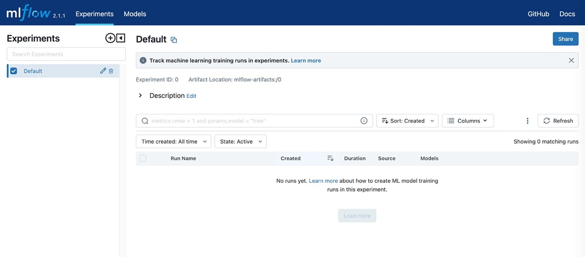

MLflow는 머신 러닝 모델의 라이프 사이클을 관리하기 위한 오픈소스 플랫폼입니다. MLflow는 다음과 같은 세 가지 주요 기능을 제공합니다. MLFlow는 머신러닝 학습 주기 관리를 위한 오픈소스 플랫폼이다. MLFlow의 주요 기능은 아래와 같습니다.
- MLflow 트래킹(tracking) :
MLflow Tracking은 실험 결과를 기록하여 실험간의 비교 지원을 할 수 있다. 기록 가능한 실험 요소로 실험시 사용한 하이퍼 파라메터나, 실험 결과 loss, auccracy 의 학습 과정에서 출력되는 주요 지표 들을 저장할 수 있다. 실험 결과들이 쌓이다 보면 각 실험들의 특징을 비교하기 어려울 수 있는데 이러한 경우는 는 tag 기능과 note 기능을 이용해 부가적인 정보를 기록함으로서 실험간의 비교시에 사용할 수 있도록 한다. - MLflow 프로젝트(proejct) : ML 코드 재사용, 공유를 위한 패키징을 지원합니다. 모델 개발 과정에서 코드, 데이터, 환경, 매개변수 등의 정보를 관리하고, 쉽게 재현할 수 있는 방법을 제공합니다
- MLflow 모델(model) : 모델을 저장하고, 버전을 관리하며, 배포할 수 있는 방법을 제공합니다. 아마존 S3와 같은 외부 저장소의 모델을 로컬로 가져와 평가시 사용할 수 있습니다.
- MLFlow 모델 레지스트리(model registry) : 중앙 저장소와 셋 API, UI와 관련한 기능늘 지원합니다.
MLflow는 쉽게 사용할 수 있으며, 다양한 머신 러닝 라이브러리와 프레임워크를 지원합니다. 또한, MLflow는 다양한 환경에서 동작할 수 있으며, 로컬 컴퓨터부터 클라우드까지 다양한 환경에서 사용할 수 있습니다. MLflow는 머신 러닝 모델의 라이프 사이클 관리를 위한 매우 유용한 도구입니다. 초보자도 쉽게 사용할 수 있도록 간단하게 설계되어 있으며, 머신 러닝 모델의 개발, 평가, 배포를 위한 다양한 기능을 제공합니다. 따라서 머신 러닝 모델 개발을 하시는 분들께 추천합니다.
MLflow 설치
MLflow 문서를 확인하고 공식 MLflow docker 이미지를 다운로드 받습니다.
# Pull the latest version
docker pull ghcr.io/mlflow/mlflow
# Pull 2.0.1
docker pull ghcr.io/mlflow/mlflow:v2.0.1
다운로드가 완료되면 아래 형태의 결과를 확인할 수 있습니다.
$ docker pull ghcr.io/mlflow/mlflow
Using default tag: latest
latest: Pulling from mlflow/mlflow
7a6db449b51b: Pull complete
e238bceb2957: Pull complete
ce77f44508b5: Pull complete
455a39ac3ab8: Pull complete
f8c2fbfe5046: Pull complete
6850db957020: Pull complete
Digest: sha256:11894a74c6aef77a3aa80bcac78c05228283412890de2978f3ae3f00c64f1b23
Status: Downloaded newer image for ghcr.io/mlflow/mlflow:latest
ghcr.io/mlflow/mlflow:latest
$ docker images
REPOSITORY TAG IMAGE ID CREATED SIZE
ghcr.io/mlflow/mlflow latest fedb32c6994e 3 weeks ago 829MB
MLflow 컨테이너를 생성합니다.
$ docker images
REPOSITORY TAG IMAGE ID CREATED SIZE
ghcr.io/mlflow/mlflow latest fedb32c6994e 3 weeks ago 829MB
$ docker run \
-itd \
--name mlflow_v1 \
-p 15000:5000 \
-v <마운트할 Path>:/home \
ghcr.io/mlflow/mlflow:latest \
/bin/sh
위 docker 실행 명령에서 --name 옵션을 주어 컨테이너 이름은 mlflow_v1로 주었습니다. --network host 옵션을 추가해 container가 localhost의 네임스페이스를 공유하도록해 컨테이너의 모든 포트를 별도 포트포워딩 없이도 외부에서도 접근할 수 있도록 합니다. 컨테이너 생성 확인 후 컨테이너에 접속합니다.
$ docker ps // 표시 되지 않는 경우 docker ps -a 입력
CONTAINER ID IMAGE COMMAND CREATED STATUS PORTS NAMES
7b36c456a67b fedb32c6994e "/bin/bash" 4 minutes ago Up About a minute mlflow_v1
$ docker exec -it mlflow_v1 /bin/bash
이후 컨테이너 작업 환경 구성을 위해 vim 과 git을 설치해 줍니다.
$ apt-get update
$ apt-get install vim
$ apt-get install git
참고로 vim을 설치하는 이유는 vi를 사용하는 일이 종종 있는데 설치 되어 있지 않아서입니다. git을 설치하는 mlflow.utils.git_utils와 관련한 오류를 방지 하기 위함입니다. Mlflow 공식 기본 예제를 실행해 보도록 합니다.
$ cd /home
$ vi mlflow_tracking.py
[python mlflow_tracking.py]
import os
from random import random, randint
from mlflow import log_metric, log_param, log_artifacts
if __name__ == "__main__":
# Log a parameter (key-value pair)
log_param("param1", randint(0, 100))
# Log a metric; metrics can be updated throughout the run
log_metric("foo", random())
log_metric("foo", random() + 1)
log_metric("foo", random() + 2)
# Log an artifact (output file)
if not os.path.exists("outputs"):
os.makedirs("outputs")
with open("outputs/test.txt", "w") as f:
f.write("hello world!")
log_artifacts("outputs")
이후 샘플 예제를 실행해 봅니다.
$ python mlflow_tracking.py
실행 결과 ./mlruns, ./outputs/test.txt 결과가 생성된다. 추적 API는 데이터를 로컬 ./mlruns디렉터리의 파일에 기록한다. 이후 MLflow의 추적 UI를 실행해봅니다.
$ mlflow ui --host 0.0.0.0
[2023-01-21 22:31:29 +0000] [894] [INFO] Starting gunicorn 20.1.0
[2023-01-21 22:31:29 +0000] [894] [INFO] Listening at: http://127.0.0.1:5000 (894)
[2023-01-21 22:31:29 +0000] [894] [INFO] Using worker: sync
[2023-01-21 22:31:29 +0000] [895] [INFO] Booting worker with pid: 895
[2023-01-21 22:31:30 +0000] [896] [INFO] Booting worker with pid: 896
[2023-01-21 22:31:30 +0000] [897] [INFO] Booting worker with pid: 897
[2023-01-21 22:31:30 +0000] [898] [INFO] Booting worker with pid: 898
...
이후 브라우저에서 URL 입력하면 별도 계정관리 화면 없이 MLflow UI 화면을 바로 접근해 확인할 수 있습니다.
http://127.0.0.1:15000/
